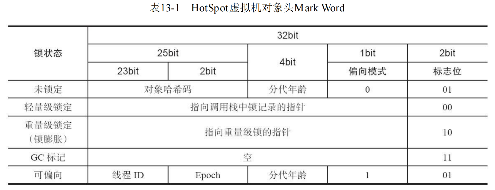
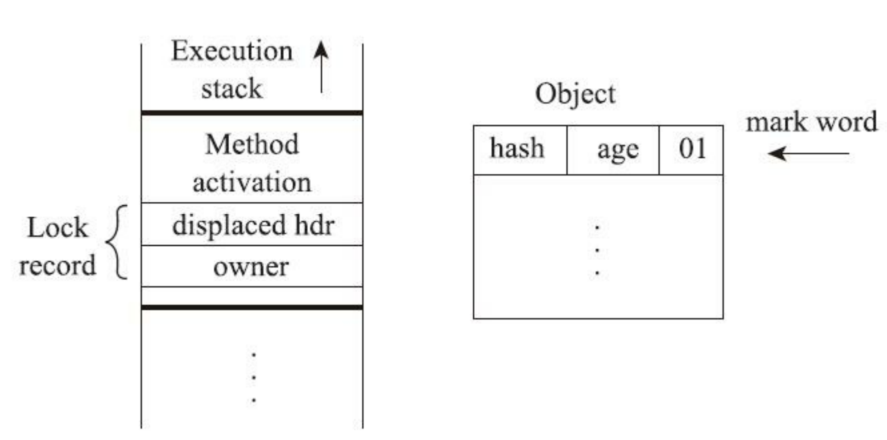
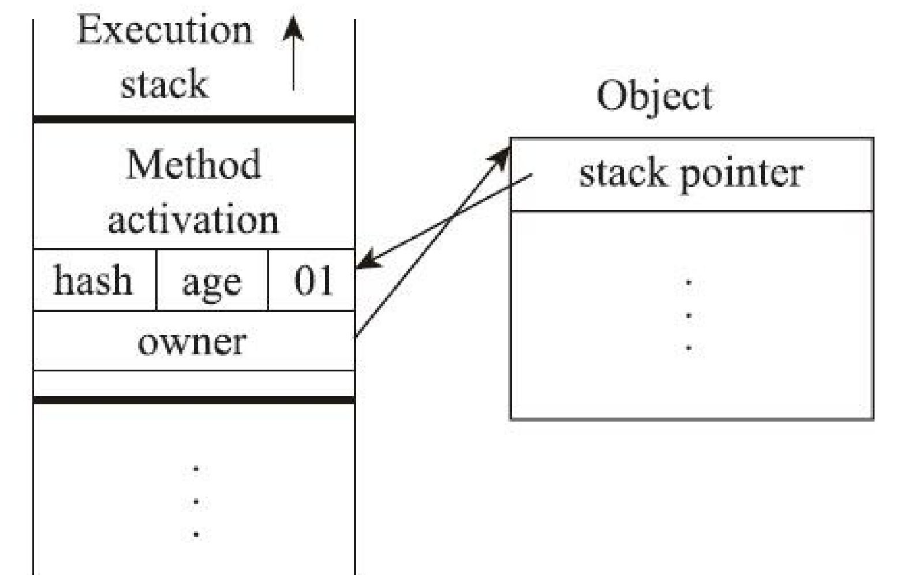
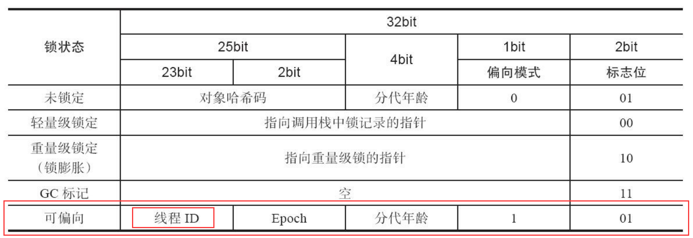
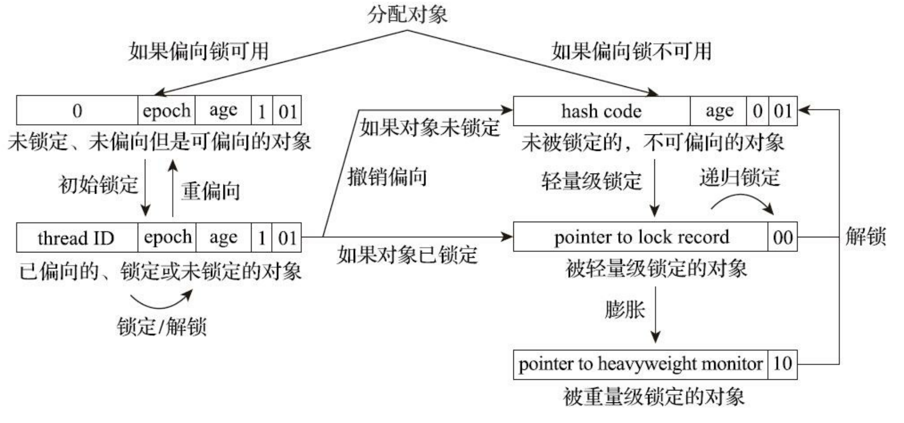

第13章 线程安全与锁优化
13.1 概述
- 面向过程的编程思想：
- 把数据和过程分别作为独立的部分来考虑，数据代表问题空间中的客体，程序代码则用于处理这些数据，这种思维方式直接站在计算机的角度去抽象问题和解决问题。
- 面向对象的编程思想：
- 站在现实世界的角度去抽象和解决问题，它把数据和行为都看作对象的一部分，这样可以让程序员能以符合现实世界的思维方式来编写和组织程序。
13.2 线程安全
“当多个线程同时访问一个对象时，如果不用考虑这些线程在运行时环境下的调度和交替执行，也不需要进行额外的同步，或者在调用方进行任何其他的协调操作，调用这个对象的行为都可以获得正确的结果，那就称这个对象是线程安全的。”
——《Java并发编程实战（Java Concurrency In Practice）[Brian Goetz]》
这个定义就很严谨而且有可操作性，它要求线程安全的代码都必须具备一个共同特征：代码本身封装了所有必要的正确性保障手段（如互斥同步等），令调用者无须关心多线程下的调用问题，更无须自己实现任何措施来保证多线程环境下的正确调用。
将Java语言中各种操作共享的数据分为以下五类：不可变、绝对线程安全、相对线程安全、线程兼容和线程对立。
1.不可变
只要一个不可变的对象被正确地构建出来（即没有发生this引用逃逸的情况），那其外部的可见状态永远都不会改变，永远都不会看到它在多个线程之中处于不一致的状态。“不可变”带来的安全性是最直接、最纯粹的。
Java语言中，如果多线程共享的数据是一个基本数据类型，那么只要在定义时使用final关键字修饰它就可以保证它是不可变的。
保证对象行为不影响自己状态的途径有很多种，最简单的一种就是把对象里面带有状态的变量都声明为final，这样在构造函数结束之后，它就是不可变的。
例如String.class和Integer.class通过将内部状态变量value定义为final来保障状态不变
常用的还有枚举类型及java.lang.Number的部分子类，如Long和Double等数值包装类型、BigInteger和BigDecimal等大数据类型。
2.绝对线程安全
绝对的线程安全能够完全满足Brian Goetz给出的线程安全的定义，这个定义其实是很严格的，一个类要达到“不管运行时环境如何，调用者都不需要任何额外的同步措施”可能需要付出非常高昂的，甚至不切实际的代价。
3.相对线程安全
相对线程安全就是我们通常意义上所讲的线程安全，它需要保证对这个对象单次的操作是线程安全的，我们在调用的时候不需要进行额外的保障措施，但是对于一些特定顺序的连续调用，就可能需要在调用端使用额外的同步手段来保证调用的正确性。
4.线程兼容
线程兼容是指对象本身并不是线程安全的，但是可以通过在调用端正确地使用同步手段来保证对象在并发环境中可以安全地使用。
Java类库API中大部分的类都是线程兼容的，如ArrayList、HashMap等。
5.线程对立
线程对立是指不管调用端是否采取了同步措施，都无法在多线程环境中并发使用代码。由于Java语言天生就支持多线程的特性，线程对立这种排斥多线程的代码是很少出现的，而且通常都是有害的，应当尽量避免。
常见的线程对立的操作还有**System.setIn()、Sytem.setOut()和System.runFinalizersOnExit()**等。
13.2.2 线程安全的实现方法
1.互斥同步
互斥同步（Mutual Exclusion & Synchronization）是一种最常见也是最主要的并发正确性保障手段。
- 同步是指在多个线程并发访问共享数据时，保证共享数据在同一个时刻只被一条（或者是一些，当使用信号量的时候）线程使用。
- 而互斥是实现同步的一种手段，临界区（Critical Section）、互斥量（Mutex）和信号量（Semaphore）都是常见的互斥实现方式。
因此在“互斥同步”这四个字里面，互斥是因，同步是果；互斥是方法，同步是目的。
在Java里面，最基本的互斥同步手段就是synchronized关键字，这是一种块结构（Block Structured）的同步语法。synchronized关键字经过Javac编译之后，会在同步块的前后分别形成monitorenter和monitorexit这两个字节码指令。
这两个字节码指令都需要一个reference类型的参数来指明要锁定和解锁的对象。
如果Java源码中的synchronized明确指定了对象参数，那就以这个对象的引用作为reference；
1
2
3
4
5
6public Object obj = new Object();
public void mutexMethod(){
synchronized(obj){
//do something...
}
}如果没有明确指定，那将根据synchronized修饰的方法类型（如实例方法或类方法），来决定是取代码所在的对象实例还是取类型对应的Class对象来作为线程要持有的锁。
根据《Java虚拟机规范》的要求，在执行monitorenter指令时，首先要去尝试获取对象的锁。如果这个对象没被锁定，或者当前线程已经持有了那个对象的锁，就把锁的计数器的值增加一，而在执行monitorexit指令时会将锁计数器的值减一。
- 一旦计数器的值为零，锁随即就被释放了。
- 如果获取对象锁失败，那当前线程就应当被阻塞等待，直到请求锁定的对象被持有它的线程释放为止。
两个关于synchronized的直接推论:
被synchronized修饰的同步块对同一条线程来说是可重入的。这意味着同一线程反复进入同步块也不会出现自己把自己锁死的情况。
被synchronized修饰的同步块在持有锁的线程执行完毕并释放锁之前，会无条件地阻塞后面其他线程的进入。这意味着无法像处理某些数据库中的锁那样，强制已获取锁的线程释放锁；也无法强制正在等待锁的线程中断等待或超时退出。
持有锁是一个重量级（Heavy-Weight）的操作。
在主流Java虚拟机实现中，Java的线程是映射到操作系统的原生内核线程之上的，如果要阻塞或唤醒一条线程，则需要操作系统来帮忙完成，这就不可避免地陷入用户态到核心态的转换中，进行这种状态转换需要耗费很多的处理器时间。
尤其是对于代码特别简单的同步块（譬如被synchronized修饰的getter()或setter()方法），状态转换消耗的时间甚至会比用户代码本身执行的时间还要长。
除了synchronized关键字以外，自JDK 5起，Java类库中新提供了java.util.concurrent包（下文称J.U.C包），其中的 java.util.concurrent.locks.Lock接口便成了Java的另一种全新的互斥同步手段。
基于Lock接口，用户能够以非块结构（Non-Block Structured）来实现互斥同步，从而摆脱了语言特性的束缚，改为在类库层面去实现同步，这也为日后扩展出不同调度算法、不同特征、不同性能、不同语义的各种锁提供了广阔的空间。
重入锁（ReentrantLock）是Lock接口最常见的一种实现^1，顾名思义，它与synchronized一样是可重入^2的。在基本用法上，ReentrantLock也与synchronized很相似，只是代码写法上稍有区别而已。不过，ReentrantLock与synchronized相比增加了一些高级功能，主要有以下三项：等待可中断、可实现公平锁及锁可以绑定多个条件。
等待可中断：是指当持有锁的线程长期不释放锁的时候，正在等待的线程可以选择放弃等待，改为处理其他事情。可中断特性对处理执行时间非常长的同步块很有帮助。
公平锁：
- 是指多个线程在等待同一个锁时，必须按照申请锁的时间顺序来依次获得锁；
- 而非公平锁则不保证这一点，在锁被释放时，任何一个等待锁的线程都有机会获得锁。
- synchronized中的锁是非公平的，ReentrantLock在默认情况下也是非公平的，但可以通过带布尔值的构造函数要求使用公平锁。
- 不过一旦使用了公平锁，将会导致ReentrantLock的性能急剧下降，会明显影响吞吐量。
锁绑定多个条件：
- 是指一个ReentrantLock对象可以同时绑定多个Condition对象。
- 在synchronized中，锁对象的wait()跟它的notify()或者notifyAll()方法配合可以实现一个隐含的条件，如果要和多于一个的条件关联的时候，就不得不额外添加一个锁；
- 而ReentrantLock则无须这样做，多次调用newCondition()方法即可。
2.非阻塞同步
互斥同步面临的主要问题是进行线程阻塞和唤醒所带来的性能开销，因此这种同步也被称为阻塞同步（Blocking Synchronization）。
悲观锁（互斥同步，开销大）：
- 其总是认为只要不去做正确的同步措施（例如加锁），那就肯定会出现问题，无论共享的数据是否真的会出现竞争，它都会先进行加锁，这将会导致用户态到核心态转换、维护锁计数器和检查是否有被阻塞的线程需要被唤醒等开销。
乐观锁（非阻塞同步，开销小）：
- 基于冲突检测的乐观并发策略，通俗地说就是不管风险，先进行操作，如果没有其他线程争用共享数据，那操作就直接成功了；如果共享的数据的确被争用，产生了冲突，那再进行其他的补偿措施，最常用的补偿措施是不断地重试，直到出现没有竞争的共享数据为止。
CAS指令需要有三个操作数，分别是内存位置（在Java中可以简单地理解为变量的内存地址，用V表示）、旧的预期值（用A表示）和准备设置的新值（用B表示）。CAS指令执行时，当且仅当V符合A时，处理器才会用B更新V的值，否则它就不执行更新。但是，不管是否更新了V的值，都会返回V的旧值，上述的处理过程是一个原子操作，执行期间不会被其他线程中断。
3.无同步方案
要保证线程安全，也并非一定要进行阻塞或非阻塞同步，同步与线程安全两者没有必然的联系。
同步只是保障存在共享数据争用时正确性的手段，如果能让一个方法本来就不涉及共享数据，那它自然就不需要任何同步措施去保证其正确性，因此会有一些代码天生就是线程安全的。
可重入代码（Reentrant Code）：这种代码又称纯代码（Pure Code），是指可以在代码执行的任何时刻中断它，转而去执行另外一段代码（包括递归调用它本身），而在控制权返回后，原来的程序不会出现任何错误，也不会对结果有所影响。
- 可以认为可重入代码是线程安全代码的一个真子集，这意味着相对线程安全来说，可重入性是更为基础的特性，它可以保证代码线程安全，即所有可重入的代码都是线程安全的，但并非所有的线程安全的代码都是可重入的。
可重入代码有一些共同的特征，例如，不依赖全局变量、存储在堆上的数据和公用的系统资源，用到的状态量都由参数中传入，不调用非可重入的方法等。
- 如果一个方法的返回结果是可以预测的，只要输入了相同的数据，就都能返回相同的结果，那它就满足可重入性的要求，当然也就是线程安全的。
线程本地存储（Thread Local Storage）：如果一段代码中所需要的数据必须与其他代码共享，那就看看这些共享数据的代码是否能保证在同一个线程中执行。如果能保证，我们就可以把共享数据的可见范围限制在同一个线程之内，这样，无须同步也能保证线程之间不出现数据争用的问题。
- ThreadLocal
13.3 锁优化
高效并发是从JDK 5升级到JDK 6后一项重要的改进项，HotSpot虚拟机开发团队在这个版本上花费了大量的资源去实现各种锁优化技术，如:
- 适应性自旋（Adaptive Spinning）、
- 锁消除（Lock Elimination）、
- 锁膨胀（Lock Coarsening）、
- 轻量级锁（Lightweight Locking）、
- 偏向锁（Biased Locking）等，
这些技术都是为了在线程之间更高效地共享数据及解决竞争问题，从而提高程序的执行 效率。
13.3.1 自旋锁与自适应自旋
互斥同步对性能最大的影响是阻塞的实现，挂起线程和恢复线程的操作都需要转入内核态中完成，这些操作给Java虚拟机的并发性能带来了很大的压力。
共享数据的锁定状态只会持续很短的一段时间，为了这段时间去挂起和恢复线程并不值得。
现在绝大多数的个人电脑和服务器都是多路（核）处理器系统，如果物理机器有一个以上的处理器或者处理器核心，能让两个或以上的线程同时并行执行，我们就可以让后面请求锁的那个线程“稍等一会”，但不放弃处理器的执行时间，看看持有锁的线程是否很快就会释放锁。为了让线程等待，我们只须让线程执行一个忙循环（自旋），这项技术就是所谓的自旋锁。
自旋等待不能代替阻塞，且先不说对处理器数量的要求，自旋等待本身虽然避免了线程切换的开销，但它是要占用处理器时间的，所以如果锁被占用的时间很短，自旋等待的效果就会非常好，反之如果锁被占用的时间很长，那么自旋的线程只会白白消耗处理 器资源，而不会做任何有价值的工作，这就会带来性能的浪费。
因此自旋等待的时间必须有一定的限度，如果自旋超过了限定的次数仍然没有成功获得锁，就应当使用传统的方式去挂起线程。自旋次数的默认值是十次，用户也可以使用参数-XX：PreBlockSpin来自行更改。
在JDK 6中对自旋锁的优化，引入了自适应的自旋。自适应意味着自旋的时间不再是固定的了，而是由前一次在同一个锁上的自旋时间及锁的拥有者的状态来决定的。
- 如果在同一个锁对象上，自旋等待刚刚成功获得过锁，并且持有锁的线程正在运行中，那么虚拟机就会认为这次自旋也很有可能再次成功，进而允许自旋等待持续相对更长的时间，比如持续100次忙循环
- 另一方面，如果对于某个锁，自旋很少成功获得过锁，那在以后要获取这个锁时将有可能直接省略掉自旋过程，以避免浪费处理器资源。
有了自适应自旋，随着程序运行时间的增长及性能监控信息的不断完善，虚拟机对程序锁的状况预测就会越来越精准，虚拟机就会变得越来越“聪明”了。
13.3.2 锁消除
锁消除是指虚拟机即时编译器在运行时，对一些代码要求同步，但是对被检测到不可能存在共享数据竞争的锁进行消除。
锁消除的主要判定依据来源于逃逸分析的数据支持（第11章已经讲解过逃逸分析技术），如果判断到一段代码中，在堆上的所有数据都不会逃逸出去被其他线程访问到，那就可以把它们当作栈上数据对待，认为它们是线程私有的，同步加锁自然就无须再进行。
变量是否逃逸，对于虚拟机来说是需要使用复杂的过程间分析才能确定的，但是程序员自己应该是很清楚的，怎么会在明知道不存在数据争用的情况下还要求同步呢？
- 有许多同步措施并不是程序员自己加入的，同步的代码在Java程序中出现的频繁程度也许超过了大部分读者的想象。
代码清单13-6 一段看起来没有同步的代码
1 | public String concatString(String s1, String s2, String s3){ |
由于String是一个不可变的类，对字符串的连接操作总是通过生成新的String对象来进行的，因此Javac编译器会对String连接做自动优化。
在JDK 5之前，字符串加法会转化为StringBuffer对象的连续append()操作，在JDK 5及以后的版本中，会转化为StringBuilder对象的连续append()操作。
即代码清单13-6所示的代码可能会变成代码清单13-7所示的样子。
代码清单13-7 Javac转化后的字符串连接操作
1 | //客观地说，既然谈到锁消除与逃逸分析，那虚拟机就不可能是JDK 5之前的版本，所以实际上会转化为非线程安全的StringBuilder来完成字符串拼接，并不会加锁。 |
13.3.3 锁粗化
原则上，我们在编写代码的时候，总是推荐将同步块的作用范围限制得尽量小——只在共享数据的实际作用域中才进行同步，这样是为了使得需要同步的操作数量尽可能变少，即使存在锁竞争，等待锁的线程也能尽可能快地拿到锁。
大多数情况下，上面的原则都是正确的，但是如果一系列的连续操作都对同一个对象反复加锁和解锁，甚至加锁操作是出现在循环体之中的，那即使没有线程竞争，频繁地进行互斥同步操作也会导致不必要的性能损耗。
代码清单13-7所示连续的append()方法就属于这类情况。如果虚拟机探测到有这样一串零碎的操作都对同一个对象加锁，将会把加锁同步的范围扩展（粗化）到整个操作序列的外部，以代码清单13-7为例，就是扩展到第一个append()操作之前直至最后一个append()操作之后，这样只需要加锁一次就可以了。
13.3.4 轻量级锁
轻量级锁是JDK 6时加入的新型锁机制，它名字中的“轻量级”是相对于使用操作系统互斥量来实现的传统锁而言的，因此传统的锁机制就被称为“重量级”锁。
需要强调一点，轻量级锁并不是用来代替重量级锁的，它设计的初衷是在没有多线程竞争的前提下，减少传统的重量级锁使用操作系统互斥量产生的性能消耗。
要理解轻量级锁，以及后面会讲到的偏向锁的原理和运作过程，必须要对HotSpot虚拟机对象的内存布局（尤其是对象头部分）有所了解。
HotSpot虚拟机的对象头（Object Header）分为两部分：
- 第一部分用于存储对象自身的运行时数据，如哈希码（HashCode）、GC分代年龄（Generational GC Age）等。
- 这部分数据的长度在32位和64位的Java虚拟机中分别会占用32个或64个比特，官方称它为“Mark Word”。
- 另外一部分用于存储指向方法区对象类型数据的指针，如果是数组对象，还会有一个额外的部分用于存储数组长度。
由于对象头信息是与对象自身定义的数据无关的额外存储成本，考虑到Java虚拟机的空间使用效率，Mark Word被设计成一个非固定的动态数据结构，以便在极小的空间内存储尽量多的信息。它会根据对象的状态复用自己的存储空间。
例如在32位的HotSpot虚拟机中，对象未被锁定的状态下，Mark Word的32个比特空间里的25个比特将用于存储对象哈希码，4个比特用于存储对象分代年龄，2个比特用于存储锁标志位，还有1个比特固定为0（这表示未进入偏向模式）。对象除了未被锁定的正常状态外，还有轻量级锁定、重量级锁定、GC标记、可偏向等几种不同状态，这些状态下对象头的存储内容如表13-1所示。

在代码即将进入同步块的时候，如果此同步对象没有被锁定（锁标志位为“01”状态），虚拟机首先将在当前线程的栈帧中建立一个名为锁记录（Lock Record）的空间，用于存储锁对象目前的Mark Word的拷贝（官方为这份拷贝加了一个Displaced前缀，即Displaced Mark Word），这时候线程堆栈与对象头的状态如图13-3所示。

虚拟机将使用CAS操作尝试把对象的Mark Word更新为指向Lock Record的指针。如果这个更新动作成功了，即代表该线程拥有了这个对象的锁，并且对象Mark Word的锁标志位（Mark Word的最后两个比特）将转变为“00”，**表示此对象处于轻量级锁定状态**。
这时候线程堆栈与对象头的状态如图13-4所示。

上面描述的是轻量级锁的加锁过程，它的解锁过程也同样是通过CAS操作来进行的，如果对象的Mark Word仍然指向线程的锁记录，那就用CAS操作把对象当前的Mark Word和线程中复制的Displaced Mark Word替换回来。
- 假如能够成功替换，那整个同步过程就顺利完成了；
- 如果替换失败，则说明有其他线程尝试过获取该锁，就要在释放锁的同时，唤醒被挂起的线程。
轻量级锁能提升程序同步性能的依据是“对于绝大部分的锁，在整个同步周期内都是不存在竞争的”这一经验法则。
如果没有竞争，轻量级锁便通过CAS操作成功避免了使用互斥量的开销；但如果确实存在锁竞争，除了互斥量的本身开销外，还额外发生了CAS操作的开销。因此在有竞争的情况下，轻量级锁反而会比传统的重量级锁更慢。
13.3.5 偏向锁
偏向锁也是JDK 6中引入的一项锁优化措施，它的目的是消除数据在无竞争情况下的同步原语， 进一步提高程序的运行性能。
如果说轻量级锁是在无竞争的情况下使用CAS操作去消除同步使用的互斥量，那偏向锁就是在无竞争的情况下把整个同步都消除掉，连CAS操作都不去做了。
偏向锁中的“偏”，就是偏心的“偏”、偏袒的“偏”。它的意思是这个锁会偏向于第一个获得它的线程，如果在接下来的执行过程中，该锁一直没有被其他的线程获取，则持有偏向锁的线程将永远不需要再进行同步。
假设当前虚拟机启用了偏向锁（启用参数-XX：+UseBiased Locking，这是自JDK 6起HotSpot虚拟机的默认值），那么当锁对象第一次被线程获取的时候，虚拟机将会把对象头中的标志位设置为“01”、把偏向模式设置为“1”，表示进入偏向模式。
同时使用CAS操作把获取到这个锁的线程的ID记录在对象的Mark Word之中。
如果CAS操作成功，持有偏向锁的线程以后每次进入这个锁相关的同步块时，虚拟机都可以不再进行任何同步操作（例如加锁、解锁及对Mark Word的更新操作等）。

一旦出现另外一个线程去尝试获取这个锁的情况，偏向模式就马上宣告结束。根据锁对象（reference）目前是否处于被锁定的状态决定是否撤销偏向（偏向模式设置为“0”），撤销后标志位恢复到未锁定（标志位为“01”）或轻量级锁定（标志位为“00”）的状态，后续的同步操作就按照上面介绍的轻量级锁那样去执行。偏向锁、轻量级锁的状态转化及对象Mark Word的关系如图13-5所示。

当对象进入偏向状态的时候，Mark Word大部分的空间（23个比特）都用于存储持有锁的线程ID了，这部分空间占用了原有存储对象哈希码的位置，那原来对象的哈希码怎么办呢？
在Java语言里面一个对象如果计算过哈希码，就应该一直保持该值不变（强烈推荐但不强制，因为用户可以重载hashCode()方法按自己的意愿返回哈希码），否则很多依赖对象哈希码的API都可能存在出错风险。
而作为绝大多数对象哈希码来源的Object::hashCode()方法，返回的是对象的一致性哈希码（Identity Hash Code），这个值是能强制保证不变的，它通过在对象头中存储计算结果来保证第一次计算之后，再次调用该方法取到的哈希码值永远不会再发生改变。
因此，当一个对象已经计算过一致性哈希码后，它就再也无法进入偏向锁状态了；
而当一个对象当前正处于偏向锁状态，又收到需要计算其一致性哈希码请求^3时，它的偏向状态会被立即撤销，并且锁会膨胀为重量级锁。在重量级锁的实现中，对象头指向了重量级锁的位置，代表重量级锁的ObjectMonitor类里有字段可以记录非加锁状态（标志位为“01”）下的Mark Word，其中自然可以存储原来的哈希码。
偏向锁可以提高带有同步但无竞争的程序性能，但它同样是一个带有效益权衡（Trade Off）性质的优化，也就是说它并非总是对程序运行有利。如果程序中大多数的锁都总是被多个不同的线程访问，那偏向模式就是多余的。在具体问题具体分析的前提下，有时候使用参数**-XX：-UseBiasedLocking**来禁止偏向锁优化反而可以提升性能。